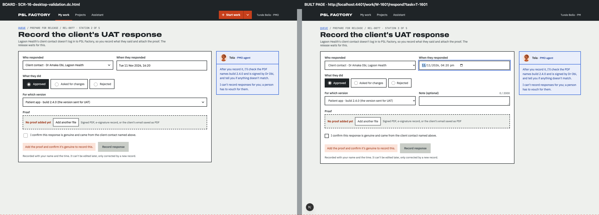
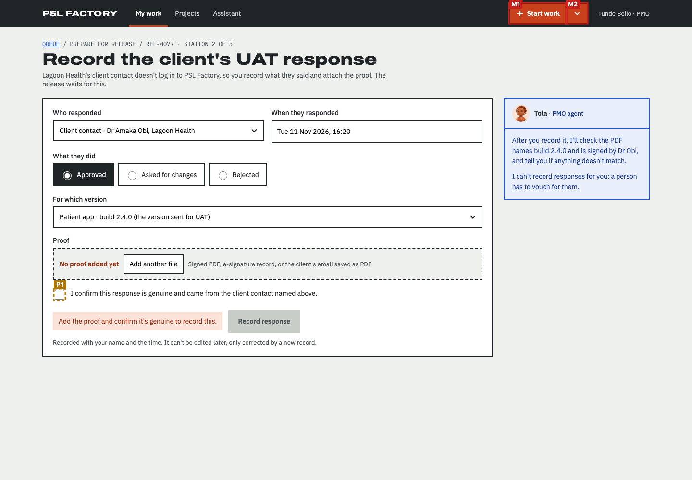
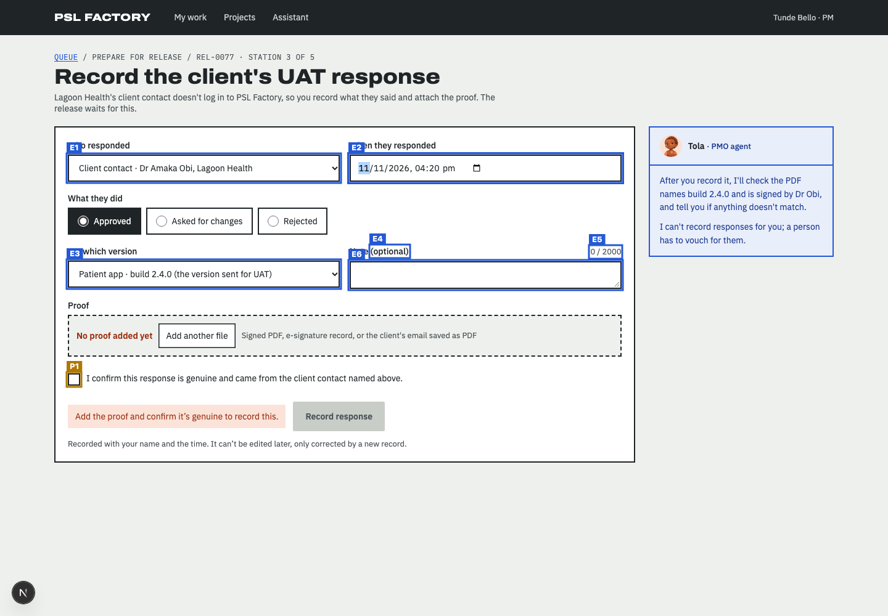
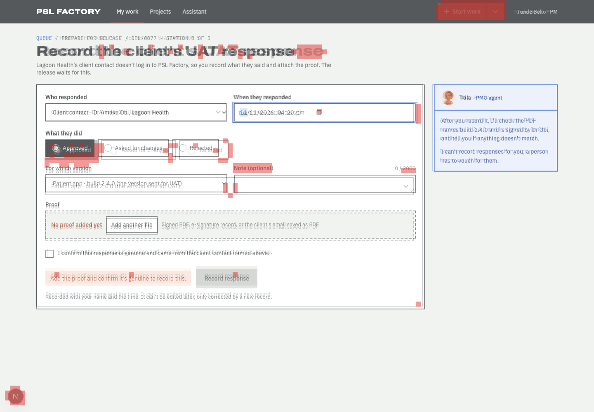

Does the built page follow the design?
Board SCR-16-desktop-validation.dc.html compared with http://localhost:4401/work/W-1601/respond?task=T-1601 at 1440px wide · 2026-11-14T07:18:16.137Z
- Every board item is on the page or approved as an exception (100%).
- Visual match 96.2 meets 90.
- 1 item(s) are in a different place; review them (not part of the pass rule unless --strict-position).
33 of 35 things drawn on the board were found on the page: headings, buttons, links, search and filter controls, table columns, labels and the repeated rows (counted once, not per row).
How closely the shapes line up: blocks, bars, tables and text areas, compared in 12px squares over the top 1000px. Different words in the same place still count as a match, so sample data does not lower the score.
Missing from the built page 2
Drawn on the board but not found on the page. Each one must be built, or approved as an exception.
| # | What | Text on the board | Where on the board | Exception |
|---|---|---|---|---|
| M1 | Link | Start work | right, 8px down | approved Frame item (app top bar, src/shell, F-05's Start work split button); not on this base and outside F-09's lane. |
| M2 | Link | More ways to start | right, 8px down | approved Frame item (app top bar, src/shell, F-05's Start work split button); not on this base and outside F-09's lane. |
In a different place 1
Found on both, but in a different order, side of the page, or area (for example inside the table frame instead of above it).
| # | What | How it moved |
|---|---|---|
| P1 | Checkbox I confirm this response is genuine and came from the client contact named above. |
|
Looks different 3
Found on both, but styled differently: table rows and cells, fonts, colours, underlines, outlines, corners. Not part of the score; check each one against the board.
| What | Difference |
|---|---|
| Link "My work" |
|
| Button "Add another file" |
|
| Checkbox "I confirm this response is genuine and came from the client contact named above." |
|
On the page but not on the board 6
Built but not drawn. Some are expected (data, status lines); the rest need the design engineer to approve or remove them.
| # | What | Text on the page | Where on the page |
|---|---|---|---|
| E1 | Drop-down | Who responded | left, 251px down |
| E2 | Text field | When they responded | middle, 251px down |
| E3 | Drop-down | For which version | left, 423px down |
| E4 | Text | (optional) | middle, 399px down |
| E5 | Text | 0 / 2000 | right, 400px down |
| E6 | Text field | Note (optional) | middle, 424px down |
Pictures
The red dashed line on the side-by-side marks how far down the visual score looks. On the marked board, red boxes are missing items (M). On the marked page, amber boxes moved (P) and blue boxes are extra (E). In the difference picture both screens are laid over each other and red squares are where the shapes do not line up.






Notes about this run
- Images: /_blob/ images are served from /Users/Hunchoo/psl-factory-worktrees/f-09/design/mascots/canvas-assets.json (19 mapped).
Found on both (33)
| Navigation area | Main | |
| Text | PSL FACTORY | |
| Link | My work | |
| Link | Projects | |
| Link | Assistant | |
| Text | Tunde Bello · PMO | page: Tunde Bello · PM |
| Main area | ||
| Text | QUEUE / PREPARE FOR RELEASE / REL-0077 · STATION 2 OF 5 | page: QUEUE / PREPARE FOR RELEASE / REL-0077 · STATION 3 OF 5 |
| Link | QUEUE | |
| Heading | Record the client's UAT response | |
| Text | Lagoon Health's client contact doesn't log in to PSL Factory, so you record what they said and attach the proof. The release waits for this. | |
| Form | ||
| Text | Who responded | |
| Text | When they responded | |
| Text | What they did | |
| Option | Approved | |
| Option | Asked for changes | |
| Option | Rejected | |
| Text | For which version | |
| Text | Proof | |
| Text | No proof added yet | |
| Button | Add another file | |
| Text | Signed PDF, e-signature record, or the client's email saved as PDF | |
| Checkbox | I confirm this response is genuine and came from the client contact named above. | |
| Text | I confirm this response is genuine and came from the client contact named above. | |
| alert | Add the proof and confirm it's genuine to record this. | page: Add the proof and confirm it’s genuine to record this. |
| Button | Record response | |
| Text | Recorded with your name and the time. It can't be edited later, only corrected by a new record. | page: Recorded with your name and the time. It can’t be edited later, only corrected by a new record. |
| Side panel | page: Tola, PMO agent | |
| Text | Tola · PMO agent | |
| Text | · PMO agent | |
| Text | After you record it, I'll check the PDF names build 2.4.0 and is signed by Dr Obi, and tell you if anything doesn't match. | |
| Text | I can't record responses for you; a person has to vouch for them. |
How the scores are worked out
Element coverage. The board is drawn locally from its own template and sample data. From the drawn board the check lists everything a person sees or uses: page areas (navigation, main, search), headings, links, buttons, form fields with their labels, table column headers, filter, search and pagination controls and fixed labels. Rows drawn from sample data count once, as a pattern ("table rows with these columns"). Each item is looked for on the page by its kind and its words (ignoring capitals, curly quotes and small wording differences, at least 80% similar). Coverage is found ÷ drawn. Order is compared in reading order (top to bottom, left to right); an item is "moved" when it breaks the order, sits on the other side of the page, or sits inside a different area.
Visual match. Both full-page screenshots are compared in 12px squares after a light blur, over the board's height (1000px; the page is 1000px). Only squares with something in them count. A square matches when its colours line up, or when both have text or lines there. Score = matching ÷ counted squares (4581 of 4762). Over every square including empty background it would be 98.2.
Technical details
Board file: /Users/Hunchoo/psl-factory-worktrees/f-09/design/canvas/project/SCR-16-desktop-validation.dc.html
Viewport: 1440×1000
Report data: report.json
Exceptions file: /Users/Hunchoo/psl-factory/delivery/features/F-09/round-1/fidelity/exception-requests.json